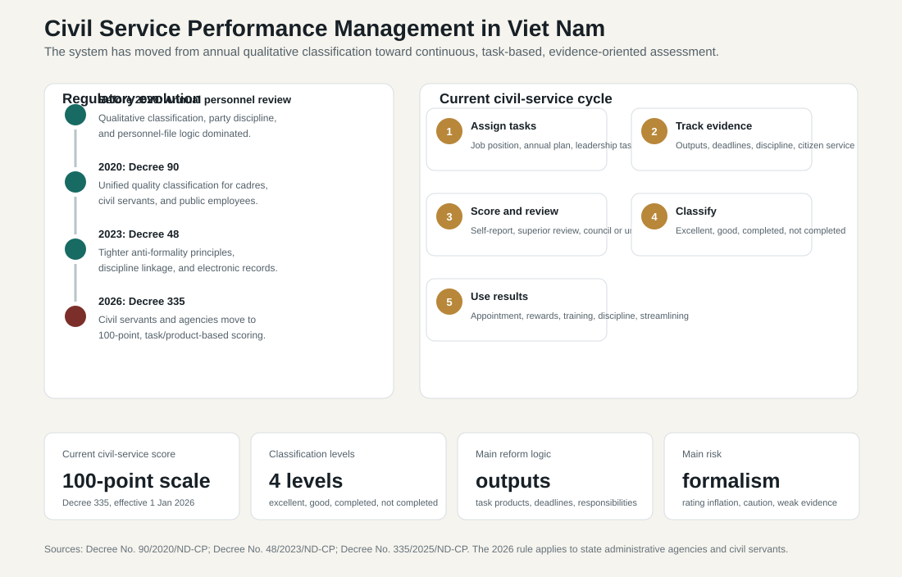
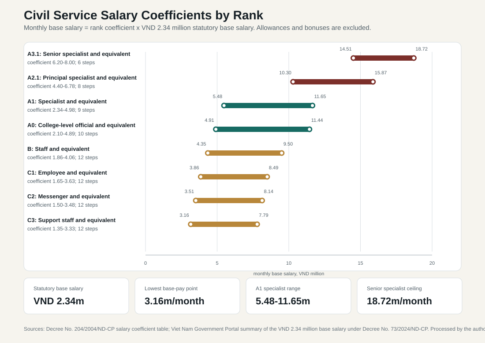

5.3 Human Resource Management and Civil Service
ASEAN comparative lens (2026). Vietnam should be read in ASEAN comparison as ASEAN's most prominent party-led, export-manufacturing upgrading case. Unlike the Philippines' service-remittance profile, Thailand's older industrial-tourism base, Malaysia's resource-industrial federal structure, or Indonesia's archipelagic domestic-market scale, Vietnam's comparative issue is how a socialist party-state manages very open global production networks. For this section, the regional comparison should compare the administrative machinery with ASEAN peers by asking whether coordination relies on central ministries, local governments, party structures, federal bargains, or compact city-state capacity. Local comparable indicators show: population 100.99 million (2024), rank 3 among the nine ASEAN reports in this workspace; GDP US$476.39 billion (2024), rank 4 among the nine ASEAN reports in this workspace; GDP per capita US$4,717 (2024), rank 5 among the nine ASEAN reports in this workspace; real GDP growth 7.09% (2024), rank 1 among the nine ASEAN reports in this workspace; government effectiveness 0.09 (2023), rank 6 among the nine ASEAN reports in this workspace; internet use 84.15% (2024), rank 4 among the nine ASEAN reports in this workspace. Use `sources/documents/regional/asean_comparative_lens_2026.md` together with ASEANstats, ASEAN Secretariat materials, and the country processed-indicator files before making cross-ASEAN claims.
Viet Nam's personnel system cannot be understood through a single civil-service category. The administrative workforce is organized around a politically significant distinction between party members, cadres, civil servants, and public employees. Party membership is the political-organizational gateway into the Communist Party of Viet Nam. Cadres hold leadership or managerial positions in party, state, and socio-political organizations and are normally selected through party-led planning, appointment, approval, election, or assignment. Civil servants work in state agencies and are governed by legal rules on recruitment, ranks, discipline, evaluation, and career progression. Public employees work in public service delivery units such as schools, hospitals, universities, and other public institutions.
This distinction matters because Viet Nam's state capacity depends on two personnel logics operating at the same time. The first is political trust and cadre management: leadership posts require ideological reliability, organizational discipline, personnel planning, and party confidence. The second is administrative professionalization: civil-service entry, rank management, training, appraisal, and discipline are increasingly formalized through law, job-position schemes, examinations, and performance rules. The challenge is not a simple choice between politics and merit. It is whether the party-state can combine political cohesion with enough professional skill to manage digital government, public investment, procurement, health reform, land administration, industrial policy, and provincial consolidation after the 2025 reorganization.
5.3.1 Party Membership as the Political Entry Channel
Recruitment into the Communist Party is different from recruitment into the civil service. Party admission is not a labor-market hiring process. It is a political-organizational process through which a citizen becomes a member of the ruling party. A party member may later become a cadre or hold a leadership position, but party membership itself is not the same thing as appointment to a public office.
The basic logic is voluntary application, political screening, recommendation, branch-level deliberation, and probation before full recognition. Candidates are expected to accept the Party's platform and charter, demonstrate political and moral qualities, participate in mass organizations or workplace organizations, and be introduced and assessed by existing party members or relevant organizations. The grassroots party cell is central because party recruitment is not only a central decision; it is embedded in workplace, locality, military, education, and public-organization cells.
The reserve or probationary period is important. It allows the organization to observe discipline, participation, moral conduct, political commitment, and performance before a candidate becomes an official party member. This makes party admission a form of political socialization. The system does not only ask whether a person is technically qualified. It asks whether the person can be trusted inside the party's organizational life.
For administrative analysis, party recruitment matters for three reasons. First, it shapes the leadership pipeline because senior leadership and politically sensitive posts normally require party confidence and often party membership. Second, it creates an internal accountability system alongside state law: party members are subject to party discipline as well as administrative or legal discipline. Third, it connects career incentives with ideological training, organizational participation, and political reliability. A technically capable official who lacks political trust may remain limited in leadership advancement.
5.3.2 Recruitment of Cadres
Cadres are not recruited in the same way as ordinary civil servants. A cadre is normally a person elected, approved, appointed, or assigned to hold a leadership, managerial, or representative position in a party, state, or socio-political organization. The cadre category is therefore tied to officeholding and political responsibility rather than only to an entry examination.
Cadre recruitment is best understood as a leadership-pipeline process. It begins with personnel planning. Organizations identify potential officials, track their political qualities and work performance, place them in personnel plans, train them, rotate or assign them to posts, and then consider them for appointment, reappointment, nomination, or election. This process is strongly party-led. Party organization bodies shape the pipeline for senior and politically sensitive posts, while state agencies implement appointments and assignments within their legal competence.
The selection criteria for cadres combine political, ethical, managerial, and professional elements. Political loyalty, compliance with the Party's line, integrity, organizational discipline, leadership capacity, public reputation, experience, and task performance all matter. Technical expertise can be decisive in specialized sectors, but it is evaluated within a broader political-administrative framework. This is why cadre recruitment cannot be reduced to a merit examination. It is a collective judgment about political trust, leadership potential, and organizational suitability.
Cadre recruitment also includes election and approval mechanisms. Some cadres hold positions through elections in representative or socio-political organizations, while others are appointed or approved by competent party-state bodies. The important point is that elections in this context operate within party-led nomination, consultation, and personnel-vetting systems. The process is not a competitive open labor market; it is a controlled leadership-selection process.
Rotation is another mechanism of cadre formation. Officials may be moved across localities, sectors, or administrative levels to broaden experience, test loyalty, reduce localism, or prepare them for higher positions. Rotation can strengthen national coherence and expose officials to implementation problems outside their original organization. It can also create risks if officials rotate too quickly to build technical knowledge or if rotation is used as a political signal rather than as capacity-building.
5.3.3 Recruitment of Civil Servants
Civil servants are recruited through a more legal-administrative process. The Law on Cadres and Civil Servants and subsequent amendments distinguish civil servants from cadres and public employees, while Decree No. 138/2020/ND-CP provides detailed rules on recruitment, employment, and management of civil servants. The core recruitment principle is that civil-service entry should be tied to job requirements, payroll quotas, qualifications, and competitive or selective procedures.
The normal process begins with workforce planning. A state agency identifies vacant positions, job-position requirements, payroll limits, qualifications, and recruitment needs. Recruitment should correspond to the approved job-position structure rather than simply adding staff. This is important because Viet Nam's administrative reform agenda seeks to reduce redundant staffing, define responsibilities more clearly, and link personnel to actual functions.
Recruitment is generally conducted through examination or selection. Examination is the stronger merit-oriented route because candidates compete through standardized stages that test general knowledge, legal-administrative understanding, foreign-language or information-technology requirements where applicable, and professional knowledge related to the post. Selection is used for specified cases under law and implementing regulations, including some special categories or positions where direct assessment is appropriate. In either case, the logic is different from cadre selection: the candidate enters a civil-service position through legal-administrative recruitment rather than through leadership nomination.
Eligibility conditions normally include nationality, age, application documents, personal history, qualifications, health, and other criteria set by the job position. Candidates may be excluded if they are under legal restriction, lack required qualifications, or fail integrity and suitability requirements. The recruitment body announces conditions, receives applications, organizes the examination or selection, approves results, and issues a recruitment decision.
Recruitment does not immediately create a fully settled career position. New civil servants normally undergo probation or initial assignment. During this period, the agency observes whether the person can perform the job, comply with discipline, serve citizens and organizations properly, and fit the administrative environment. Successful completion leads to appointment to the appropriate civil-service rank and formal placement. Failure can lead to termination of the recruitment result.
5.3.4 Recruitment of Public Employees and Movement into the Civil Service
Public employees are not the same as civil servants. They work in public non-business units such as education, health, research, and public service institutions. Their recruitment and employment are governed by a separate public-employee framework. However, the categories can interact. Public employees with appropriate qualifications and experience may sometimes move into civil-service positions through legally specified procedures, especially when they meet the requirements of a job position and are received or recruited by a competent agency.
This interaction matters because many of Viet Nam's most important state functions require technical specialists. Health administrators, teachers, university managers, engineers, inspectors, IT professionals, and finance specialists may sit in different employment categories. If the system is too rigid, the state may struggle to move talent into administrative positions. If it is too permissive, patronage and non-transparent transfers can weaken merit. The policy problem is to allow controlled mobility without undermining competitive recruitment.
5.3.5 Probation, Rank Appointment, and Initial Assignment
After recruitment, the civil servant normally enters a probationary or initial service period. The purpose is to test real performance rather than only examination performance. The agency assigns work, supervises conduct, evaluates task completion, and confirms whether the person meets professional and ethical requirements.
Rank appointment is central to the Vietnamese civil-service system. Civil servants are managed through ranks, grades, salary coefficients, and job positions. Rank expresses professional level and administrative status; job position expresses the function and duties of a specific post. The reform challenge is to make these two systems work together. If rank dominates too strongly, promotion may become hierarchical and seniority-based. If job-position management becomes stronger, pay, appointment, training, and evaluation can be tied more closely to actual work.
Initial assignment is also a capacity issue. A well-recruited civil servant may still perform poorly if placed in a unit with weak supervision, unclear duties, poor data systems, or low incentives. Conversely, a strong agency can socialize new officials into service standards, documentation practices, citizen orientation, and compliance discipline. Recruitment therefore cannot be separated from onboarding and organizational culture.
5.3.6 Training, Political Education, and Professional Development
Training operates on several tracks. Civil servants receive professional and administrative training related to law, procedures, public finance, inspection, digital systems, citizen service, and sectoral tasks. Cadres and leadership candidates receive political theory, leadership, management, and party-line training. The Ho Chi Minh National Academy and political schools are important for leadership and ideological formation, while ministries, local governments, and specialized academies provide professional training.
This dual training system reflects the party-state logic. Technical capacity alone is not enough for leadership. Cadres are expected to understand political direction, organizational discipline, socialist rule-of-law language, and party resolutions. Civil servants are expected to understand law, administrative procedures, documents, service standards, and sectoral expertise. The best officials need both: political literacy and professional competence.
The weakness is that training can become credential-oriented. If courses are treated mainly as requirements for appointment or rank promotion, they may not improve real skills. Viet Nam's digital government, procurement, public investment, energy transition, health reform, and data-governance agenda require applied training that changes work behavior. Training should therefore be evaluated by whether it improves task performance, not only by whether officials receive certificates.
5.3.7 Performance Management, Evaluation, and Classification
Performance management in Viet Nam should be read as more than an annual appraisal form. It is a personnel-control mechanism that links task assignment, political discipline, administrative responsibility, appointment, reappointment, promotion, reward, training, discipline, and exit. In a party-state system, performance evaluation does not ask only whether an official produces measurable outputs. It also asks whether the official maintains political qualities, organizational discipline, ethical conduct, compliance with law, citizen-service attitude, and collective responsibility.
The system has changed in stages. Earlier evaluation relied heavily on annual personnel review, self-criticism, ideological assessment, and qualitative classification inside the cadre-management file. Decree No. 90/2020/ND-CP then provided a more unified legal framework for assessing and classifying the quality of cadres, civil servants, and public employees. It organized the evaluation around political ideology, ethics and lifestyle, working style, organizational discipline, task results, and leadership responsibility. Decree No. 48/2023/ND-CP amended this framework by tightening rules against formalistic assessment, clarifying links between discipline and classification, and allowing assessment records to be stored electronically. The most recent shift is Decree No. 335/2025/ND-CP, effective from 1 January 2026, which creates a more explicit 100-point evaluation system for state administrative agencies and civil servants.[7][8][9]

The current civil-service approach is more managerial than the older classification model. It still retains four broad quality levels: excellent task completion, good task completion, task completion, and non-completion of tasks. However, the 2026 framework gives greater weight to assigned tasks, work products, deadlines, responsibility for results, and the performance of the agency or unit. For leaders and managers, evaluation is not limited to personal conduct; it also reflects whether the organization under their responsibility performs its assigned functions. This is important because Vietnamese administrative reform increasingly emphasizes job-position management, digital work records, public-service delivery, and accountability for outputs rather than only seniority and formal compliance.
The practical evaluation cycle normally begins with task assignment. A civil servant's duties are defined through the job position, annual work plan, superior's instructions, and sectoral or local targets. During the year, the organization records task completion, compliance with rules, deadlines, coordination, citizen-service behavior, discipline, and evidence of outputs. At evaluation time, the official prepares a self-assessment. The unit or relevant collective discusses the assessment, the direct superior comments on performance, and the competent authority issues the final classification. The result enters the personnel file and can be used for planning, appointment, reappointment, promotion, commendation, training, discipline, transfer, or streamlining.
| Dimension | Current logic | Administrative meaning |
|---|---|---|
| Object of evaluation | State administrative agencies and civil servants under the 2026 rule; cadres and public employees remain connected to the broader quality-classification framework. | Performance management is now more differentiated by personnel category and agency type. |
| Core criteria | Political qualities, ethics, discipline, task results, professional capacity, coordination, citizen-service attitude, and leadership responsibility. | Viet Nam combines political-administrative assessment with managerial performance assessment. |
| Measurement form | 100-point scoring for civil servants and state administrative agencies, combined with qualitative classification. | The system is moving from narrative appraisal toward more explicit evidence and scoring. |
| Classification | Excellent completion, good completion, completion, or non-completion of tasks. | Ratings affect appointment, reappointment, promotion, reward, discipline, and personnel streamlining. |
| Leadership accountability | Leaders are assessed partly through the results of their agency, unit, or assigned field. | Performance management is a tool for making collective administrative failure visible. |
| Records | Personnel files and electronic records. | Digitalization can reduce informality if records are accurate and auditable. |
The evolution has several implications. First, Viet Nam is trying to move from a personality-based and seniority-based personnel culture toward a job-position and results-based system. This is consistent with broader administrative reform: ministries and provinces are expected to define functions, reduce overlap, manage payroll more tightly, and link personnel to actual tasks. Second, the evaluation system is becoming more closely connected to discipline and anti-corruption. An official who is disciplined by the party or state may face a lower performance classification, which makes integrity part of career management. Third, the state is trying to create an evidence base for streamlining after the 2025 administrative reorganization. When provinces are merged, district-level administration is abolished, and agencies are consolidated, performance records become politically and administratively important.
The system nevertheless faces serious problems. The first is rating inflation. If most officials receive positive classifications, the system cannot distinguish high performers, ordinary performers, and weak performers. This turns evaluation into a ritual and weakens its value for promotion, training, and dismissal decisions. The second problem is formalism. Officials may prepare polished self-assessments, collect safe evidence, and avoid honest discussion of failure. The third problem is measurability. Some administrative tasks are easy to count, such as processed files, inspection cases, digital-service transactions, or deadline compliance. Other tasks, such as policy advice, coordination, negotiation, crisis response, and prevention of future risks, are much harder to measure.
The fourth problem is the combination of political and managerial criteria. Political discipline and ethical conduct are essential in Viet Nam's party-state system, but they do not automatically measure administrative competence. A politically reliable official may still be technically weak; a technically strong official may be cautious if evaluation is perceived as politically sensitive. The fifth problem is supervisor discretion. A direct superior's assessment is necessary because performance cannot be judged only by numbers, but it creates risks of favoritism, retaliation, conflict avoidance, or collective leniency. The sixth problem is risk aversion. In the current anti-corruption environment, officials may interpret performance management as a system of punishment rather than learning. This can produce delayed approvals, avoidance of procurement decisions, and excessive upward referral.
Performance management is especially difficult after the 2025 reorganization. Merged provinces and restructured agencies must compare officials from different legacy units, different work cultures, different rating histories, and different workload conditions. If evaluation criteria are not calibrated, personnel streamlining may look arbitrary. If criteria are too rigid, agencies may lose experienced staff whose work is not easily captured by indicators. If evaluation is too soft, restructuring will not improve capacity. The reform challenge is therefore to use performance data without pretending that all administrative work can be reduced to a simple score.
The policy direction should be balanced. Viet Nam needs clearer job-position descriptions, measurable service standards, digital workflow evidence, citizen and business feedback, audit and inspection results, and stronger links between agency outcomes and leadership evaluation. At the same time, evaluation should support professional development, not only discipline. Weak performance should trigger training, reassignment, mentoring, or job redesign where appropriate. Serious misconduct, corruption, deliberate delay, falsification, or abuse of power should trigger discipline. Lawful decisions made under uncertainty should be protected, even when outcomes are imperfect. A credible performance-management system must therefore distinguish corruption, incompetence, reasonable risk-taking, and unavoidable policy uncertainty.
5.3.8 Promotion, Leadership Appointment, and Reappointment
Promotion has two different meanings. One is promotion in rank or professional status. This may involve examinations, qualifications, training, service time, performance records, and available rank structure. The other is appointment to a leadership or managerial post. Leadership appointment is more political and organizational because it involves party trust, personnel planning, consultation, vetting, and collective approval.
This distinction explains why a technically competent civil servant may advance in professional rank without necessarily entering senior leadership, while a cadre may move through leadership posts because the party-state views the person as politically and organizationally suitable. In practice, many leadership cadres also come from the civil-service system. The pipeline is therefore not fully separate; it is layered. Civil-service experience can become a base for cadre selection, but cadre selection adds political screening and leadership judgment.
Reappointment is also significant. Leadership posts are not held indefinitely by default. Officials may be reviewed at the end of a term or appointment period. Reappointment depends on performance, discipline, organizational needs, age, health, reputation, and personnel planning. This gives the system a mechanism to remove or rotate weak leaders, but its effectiveness depends on whether evaluation is honest and whether political protection is limited.
5.3.9 Transfer, Rotation, Secondment, and Position Reassignment
The personnel system uses transfer, rotation, and secondment to move officials across posts, agencies, localities, and levels of government. Rotation is especially important for cadres because it can broaden experience and prevent excessive local attachment. Secondment can place officials temporarily in another agency or locality to meet urgent capacity needs. Reassignment can occur when organizations are restructured, when job positions change, or when officials are no longer suitable for their current post.
These tools help the party-state manage a unified administrative system across a territorially diverse country. They also create risks. Frequent transfers can reduce specialization. Politically motivated rotation can disrupt agencies. Poorly managed reassignment after reorganization can lower morale. The staffing test is whether mobility is used to build capacity and solve staffing problems, or whether it becomes a tool of informal personnel management.
5.3.10 Salary Coefficients, Base Pay, and Incentives
Public-sector pay is linked to ranks, grades, positions, allowances, and statutory salary rules. Viet Nam still relies heavily on a coefficient system inherited from the public-sector wage framework established under Decree No. 204/2004/ND-CP. The basic formula is simple: monthly base salary = salary coefficient x statutory base salary. Since 1 July 2024, the statutory base salary for cadres, civil servants, public employees, and armed forces personnel has been VND 2.34 million per month under the post-2024 wage adjustment framework. This does not equal total take-home income because leadership allowances, responsibility allowances, seniority allowances, sectoral supplements, regional allowances, bonuses, and other benefits may be added depending on position and sector. The coefficient table is therefore best read as the base pay spine of the administrative system rather than as a complete compensation statement.[5][6]

| Rank group | Typical civil-service rank | Coefficient range | Monthly base salary range, VND million | Administrative meaning |
|---|---|---|---|---|
| A3.1 | Senior specialist and equivalent | 6.20-8.00 | 14.51-18.72 | Highest professional rank in the ordinary specialist track; normally tied to senior advisory, policy, inspection, or leadership-support functions. |
| A2.1 | Principal specialist and equivalent | 4.40-6.78 | 10.30-15.87 | Mid-senior professional rank; important for ministries and provincial departments that need policy drafting, coordination, and technical supervision. |
| A1 | Specialist and equivalent | 2.34-4.98 | 5.48-11.65 | Core professional civil-service rank; many ordinary professional officials sit in this band. |
| A0 | College-level official and equivalent | 2.10-4.89 | 4.91-11.44 | Lower professional track for college-level qualifications and equivalent posts. |
| B | Staff and equivalent | 1.86-4.06 | 4.35-9.50 | Support and administrative staff track. |
| C1 | Employee and equivalent | 1.65-3.63 | 3.86-8.49 | Lower service and clerical category. |
| C2 | Messenger and equivalent | 1.50-3.48 | 3.51-8.14 | Auxiliary service category. |
| C3 | Support staff and equivalent | 1.35-3.33 | 3.16-7.79 | Lowest support category in the coefficient schedule. |
The table shows why salary reform is administratively sensitive. The system is predictable, transparent, and fiscally controllable, but it is also compressed. A newly appointed A1 specialist earns only VND 5.48 million per month in base salary before allowances, while even the highest A3.1 coefficient produces a base salary below VND 19 million per month. This structure can work for a hierarchy that values stability and long service, but it is weaker for functions that compete with the private sector for data engineers, procurement specialists, financial analysts, urban planners, digital-government architects, climate specialists, doctors, and infrastructure managers.
The coefficient system also creates a promotion incentive. Because salary growth is attached to rank, grade, and step progression, officials may treat rank promotion as an income strategy, not only as recognition of higher responsibility. This can distort human-resource management if the state cannot create enough senior professional posts or if promotion decisions become more important than job-position design. A job-position reform agenda should therefore clarify what each post requires, what competence it demands, and whether the pay attached to that post is adequate for retention.
Vietnamese policy discussions recognize that the base salary remains low relative to living costs and the skill demands placed on the modern bureaucracy. The Viet Nam Government Portal reported that the base salary may be increased by 8 percent from July 2026, from VND 2.34 million to VND 2.53 million per month. If implemented without changing coefficients, this would mechanically raise every salary band while preserving the same hierarchy. Such an adjustment would relieve some pressure, but it would not by itself solve compression, allowance complexity, or the difficulty of attracting high-skill specialists into public service.
Rewards and incentives include commendations, recognition, promotion opportunities, training opportunities, bonuses, leadership prospects, and career advancement. Yet these incentives operate inside a broader integrity environment. Stronger discipline and inspection are necessary, but excessive fear of responsibility can produce administrative delay. The personnel system must therefore combine integrity control with protection for lawful, evidence-based decision-making. A bureaucracy that punishes corruption but also punishes every failed initiative will struggle to implement complex reforms.
5.3.11 Pay, Corruption Risk, and Administrative Behavior
Salary is not the only cause of corruption, but it is part of the incentive structure in which officials make decisions. Low or compressed pay can make petty corruption more tempting where officials control permits, inspections, procurement documents, land-use records, customs procedures, tax assessments, police interactions, hospital access, school services, or local administrative approvals. When official compensation is visibly below living costs or below the value of the discretion exercised by an office, informal payments can become normalized as a way to supplement income, speed up procedures, or secure preferential treatment.
This does not mean that corruption can be explained as a simple wage problem. Large corruption cases usually involve rents from land conversion, public investment, procurement, banking, state-owned enterprises, licensing, construction, natural resources, or political protection. These are problems of discretionary authority, opaque information, weak conflict-of-interest controls, collusion among firms and officials, and insufficient transparency. Raising salaries may reduce pressure for petty corruption and improve retention, but it cannot eliminate grand corruption if officials still control large economic rents without strong audit, disclosure, competition, and accountability mechanisms.
The wage-corruption relationship should therefore be understood in three layers. First, low base pay can create need-based vulnerability, especially among lower-level officials who face household pressure and limited advancement. Second, compressed pay can create talent-retention vulnerability because skilled officials may leave for the private sector or use outside opportunities to supplement income. Third, high-discretion posts create rent-based corruption risk regardless of salary level, because the potential gain from manipulating land, procurement, customs, or licensing decisions can far exceed official pay.
The policy implication is that salary reform and anti-corruption reform must move together. Better pay can support integrity only if it is combined with credible recruitment, transparent promotion, asset and income declarations, e-procurement, digital service delivery, risk-based inspection, audit follow-up, conflict-of-interest rules, rotation in high-risk posts, whistleblower protection, and meaningful sanctions. Conversely, harsh anti-corruption enforcement without adequate pay, clear rules, and protection for lawful decisions may produce a defensive bureaucracy: officials avoid approvals, delay procurement, push decisions upward, and become reluctant to take responsibility.
For Viet Nam, this issue is especially important after the 2025 administrative reorganization. Provincial consolidation, district-level abolition, public investment acceleration, land administration, infrastructure delivery, and digital-government reform all place more responsibility on fewer and larger administrative units. If officials are expected to manage larger budgets, more complex procurement, and more demanding citizen services while remaining under a low and compressed base-pay structure, the risk is not only corruption. It is also loss of talent, weak implementation, risk avoidance, and reduced state capacity.
5.3.12 Discipline, Liability, and Removal
Cadres, civil servants, public employees, and party members can face different but overlapping forms of discipline. Party members can be disciplined under party rules. Civil servants and cadres can face administrative discipline under state law. Serious violations can lead to legal prosecution. This creates a multi-layered accountability system: party discipline, administrative discipline, inspection, audit, criminal law, and public reputation.
Common administrative disciplinary forms include reprimand, warning, demotion, dismissal from position, forced resignation, or removal from the civil service depending on the category and severity of violation. Leadership cadres may lose office through dismissal or removal, while civil servants may be dismissed from employment or disciplined within rank and position systems. Anti-corruption cases can also affect retired officials if violations occurred while in office. This reinforces the message that public authority carries continuing responsibility.
The analytical issue is balance. Discipline must be strong enough to deter corruption, abuse of office, falsification, waste, and poor implementation. But if discipline is unpredictable or politically selective, officials may avoid decisions, delay approvals, or push responsibility upward. Viet Nam's current personnel challenge is therefore to create a system where officials are both accountable and willing to act.
5.3.13 Exit, Retirement, and Post-Service Management
Exit from public service can occur through retirement, resignation, dismissal, organizational restructuring, health reasons, or transfer to another status. Retirement is linked to the national social-insurance and pension framework, while public-sector rules interact with rank, salary coefficients, allowances, and years of service. In periods of administrative streamlining, exit management becomes especially sensitive because redundant positions, merged agencies, and abolished administrative levels create personnel displacement.
Retirement is not only a welfare issue. It affects succession, promotion opportunities, fiscal cost, and institutional memory. If senior officials stay too long without clear succession, younger officials face blocked advancement. If experienced officials exit too quickly, agencies may lose expertise. The 2025 reorganization increases the importance of succession planning, knowledge transfer, and fair retirement or reassignment procedures.
Post-service management also matters. Retired officials may retain influence, networks, and reputational authority. Rules on post-retirement discipline, conflict of interest, and responsibility for decisions made while in office are therefore important for public trust. A credible personnel system must manage not only entry and promotion, but the entire public-service life cycle.
5.3.14 Personnel Life Cycle and Administrative Meaning
| Stage | Cadre pathway | Civil-servant pathway | Main administrative issue |
|---|---|---|---|
| Political entry | Party admission, political socialization, probationary party membership, and branch-level recognition. | Party membership is not required for every technical post, but political reliability matters for sensitive functions. | Distinguish party membership from public employment while recognizing the leadership pipeline role of the Party. |
| Recruitment | Personnel planning, nomination, vetting, appointment, approval, election, assignment, and rotation. | Job-position planning, payroll quota, examination or selection, recruitment decision, and probation. | Cadre recruitment emphasizes political trust and leadership suitability; civil-service recruitment emphasizes legal entry and job requirements. |
| Initial placement | Assignment to leadership, managerial, representative, or party-state posts. | Probation, rank appointment, and placement in an agency or job position. | Good recruitment fails if onboarding and placement are weak. |
| Training | Political theory, leadership, management, party discipline, and sectoral governance. | Administrative law, procedures, public finance, digital systems, citizen service, and professional skills. | Training must build real capability rather than only credentials. |
| Evaluation | Collective assessment of political qualities, leadership, integrity, reputation, and results. | Annual classification, task performance, compliance, citizen-service attitude, and professional competence. | Evaluation must distinguish performance strongly enough to affect career decisions. |
| Promotion | Appointment, reappointment, rotation, and higher leadership inclusion in personnel plans. | Rank promotion, professional advancement, leadership appointment where suitable. | Professional achievement and political credibility interact. |
| Mobility | Rotation across localities, sectors, or levels to test and broaden leadership. | Transfer, secondment, reassignment, and movement across job positions. | Mobility should build capacity rather than only signal control. |
| Discipline | Party discipline, removal from leadership, administrative discipline, and legal liability. | Reprimand, warning, demotion, dismissal, removal, or other legal discipline. | Discipline must deter misconduct without creating paralysis. |
| Exit | End of term, retirement, resignation, dismissal, removal, or reassignment after restructuring. | Retirement, resignation, dismissal, transfer, or exit due to organizational change. | Exit management affects morale, succession, fiscal cost, and institutional memory. |
5.3.15 Interpretation
Viet Nam's personnel system is a hybrid of Leninist party management and legally formalized civil-service administration. It is not an open Weberian bureaucracy in which all important offices are filled through neutral examinations. It is also not a purely informal patronage system. It uses legal recruitment, ranks, training, evaluation, and discipline for civil servants, while preserving party-led cadre control for leadership and politically sensitive posts.
The strength of this system is coordination. The party-state can align leadership, organization, and policy direction across ministries and provinces. The weakness is that professional competence can be subordinated to political caution, and evaluation can become too collective to identify weak performance. Viet Nam's next development tasks require the system to become more skill-intensive without losing implementation discipline. Digital government, energy security, health reform, land management, trade compliance, public investment, and provincial restructuring all require officials who are technically competent, politically trusted, ethically disciplined, and willing to take lawful responsibility.
The core reform question is therefore not whether Viet Nam should choose cadres or civil servants. It needs both. The real question is whether cadre management can select leaders who understand complex policy systems, and whether civil-service management can recruit, train, reward, and retain the specialists needed for a more sophisticated state.
[1]: https://english.luatvietnam.vn/law-no22-2008-qh12-dated-november-28-2008-of-the-national-assembly-on-cadres-and-civil-servants-39050-doc1.html "Law on Cadres and Civil Servants, Law No. 22/2008/QH12"
[2]: https://english.luatvietnam.vn/law-on-amend-and-supplement-a-number-of-article-of-the-law-on-cadres-and-civil-servants-and-the-law-on-public-employees-no-52-2019-qh14-dated-novembe-179051-doc1.html "Law No. 52/2019/QH14 amending the Law on Cadres and Civil Servants and the Law on Public Employees"
[3]: https://lawnet.vn/thong-tin-phap-luat/en/thong-bao-van-ban-moi/decree-no-138-2020-nd-cp-of-the-government-of-vietnam-on-recruitment-employment-and-management-of-officials-111875.html "Decree No. 138/2020/ND-CP on recruitment, employment, and management of civil servants"
[4]: https://www.vietnam.vn/en/nhung-diem-moi-trong-quy-dinh-thi-hanh-dieu-le-dang "Regulation No. 232-QD/TW on implementation of the Party Charter"
[5]: https://lawnet.vn/en/vb/Decree-No-204-2004-ND-CP-salary-regime-applicable-to-cadres-public-servants-officials-and-armed-forces-3DCE.html "Decree No. 204/2004/ND-CP on salary regime for cadres, civil servants, public employees, and armed forces"
[6]: https://en.baochinhphu.vn/base-salary-may-be-increased-by-8-from-next-july-111260309163352735.htm "Viet Nam Government Portal, base salary may be increased by 8% from next July"
[7]: https://vanban.chinhphu.vn/?docid=200766&pageid=27160 "Decree No. 90/2020/ND-CP on assessment and classification of quality of cadres, civil servants, and public employees"
[8]: https://vanban.chinhphu.vn/?docid=208281&pageid=27160 "Decree No. 48/2023/ND-CP amending Decree No. 90/2020/ND-CP"
[9]: https://vanban.chinhphu.vn/?classid=1&docid=216292&pageid=27160 "Decree No. 335/2025/ND-CP on assessment and classification of quality of state administrative agencies and civil servants"